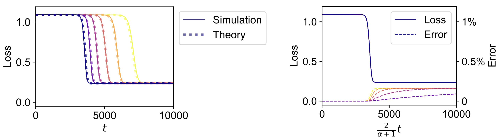
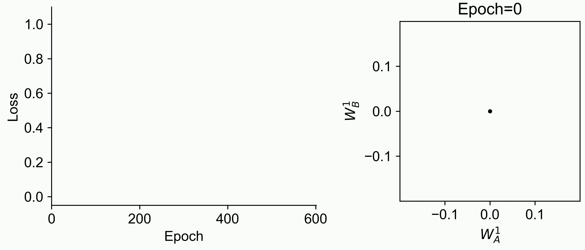

Bio
I am a PhD student at Gatsby Computational Neuroscience Unit UCL, advised by Peter Latham and Andrew Saxe. I am interested in how neural networks with various architectures learn. Previously, I worked on 3D computer vision at DJI R&D and CUHK CSE; and did undergrad at HUST SES.
Paper
 |
Training Dynamics of In-Context Learning in Linear Attention
Yedi Zhang, Aaditya K. Singh, Peter E. Latham*, Andrew Saxe*
arXiv
|
|
 |
When Are Bias-Free ReLU Networks Like Linear Networks?
Yedi Zhang, Andrew Saxe, Peter E. Latham
ICML 2024 High-dimensional Learning Dynamics Workshop
arXiv
|
|
 |
Understanding Unimodal Bias in Multimodal Deep Linear Networks
Yedi Zhang, Peter E. Latham, Andrew Saxe
ICML 2024
webpage | pmlr | arXiv | code
|
Blog
2024-09-17
Eigenvalue Perturbation Theorem
2024-04-16
Isserlis' Theorem
2024-01-21
My Cribsheet for Dynamical Systems
2023-04-06
Free Energy and EM Algorithm
2023-03-18
A Manual for Reading Independence
Fun
2025-03-02
Shows I Caught
2023-11-25
Ten Cheapest World-Renowned Shows in London
|

{kind=link}
{kind=link}